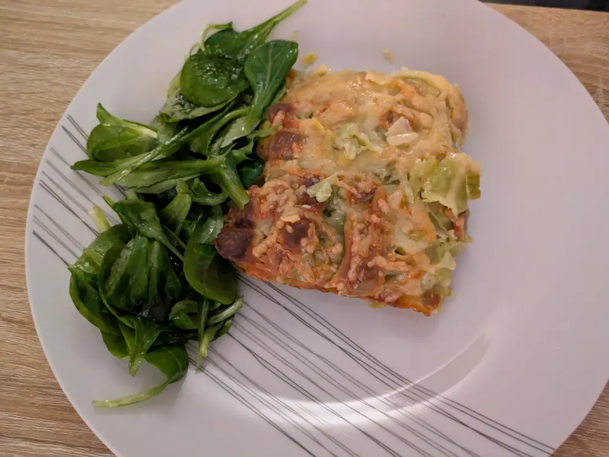

Recipe | Gratin de Ravioles à la fondue de Poireaux

Gratin de Ravioles à la fondue de Poireaux
Ingredients
For 6 people:
- 4 medium-sized leek
- 3x 240g Ravioles au comté AOP
- 15cl Creme fraiche liquide
- Butter
- Gruyere
Steps
- Clean the leek by slitting the top and getting rid of the mud. Then quater the leek and chop in small pieces.
- Cook the chopped leek in butter slowly till it melts for about 10-15 min. Keep tossing continuously to avoid burning.
- Butter a rectangular dish and layer it with ravioles and then a layer of leek.
- Pour approx. 5cl of cream and season with some salt.
- Follow with a second layer of ravioles, leek and cream and salt.
- For the third layer, add the remaining cream, salt and grate gruyere cheese.
- Bake in the oven at 180 C for about 20 min till the crust is golden brown.